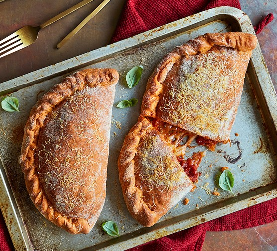

Calzone recipe

Description
This is a calzone that I like to make often
Ingredients
- 24 ounces prepared pizza dough
- 8 slices prosciutto
- 2 cups ricotta cheese, drained
- ½ teaspoon salt
- ½ teaspoon freshly ground black pepper to taste
- ½ teaspoon cayenne pepper
- 1½ cups finely diced smoked ham
- 4 ounces fresh mozzarella cheese, thinly sliced, drained on paper towels
- 1 teaspoon extra-virgin olive oil
- 1 tablespoon cornmeal
- 1 egg
- 1 teaspoon water
- 1 tablespoon freshly grated Parmigiano-Reggiano cheese
- 2 cups marinara sauce for dipping, heated (Optional)
Directions
- Preheat oven to 500 degrees F (260 degrees C). Line a baking sheet with parchment paper.
- Divide dough into 4 equal portions; shape each into a ball. On a lightly floured surface, flatten each dough ball into a flat circle and roll out into an 8- or 9-inch circle.
- Place 2 prosciutto slices on one half of each circle of dough, leaving a 1-inch empty border. Spoon ricotta cheese on prosciutto. Season with a pinch of salt, pepper, and cayenne pepper. Top with chopped ham, mozzarella slices, and a drizzle of olive oil.
- Moisten edge of dough with a bit of water using your fingertip. Fold the empty half of the dough over the filling and lightly seal edges. Crimp the edges up to completely seal the calzone.
- Sprinkle lined baking sheet with cornmeal. Transfer calzones to baking sheet. Cut several small slits in the top of the crust with the tip of a knife to allow for venting
- Beat egg with water to make egg wash. Brush the calzones with egg wash. Dust with grated Parmigiano-Reggiano cheese. Remove excess cornmeal and grated cheese from around calzones to avoid smoke from the hot oven
- Bake in preheated oven until browned, about 15 minutes. Let cool 15 minutes before serving. Serve with heated marinara sauce for dipping.